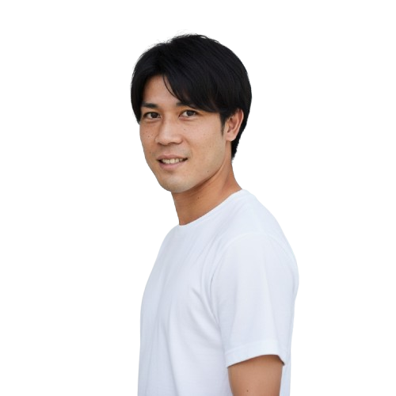
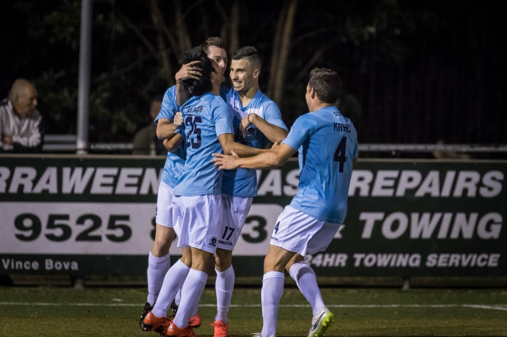
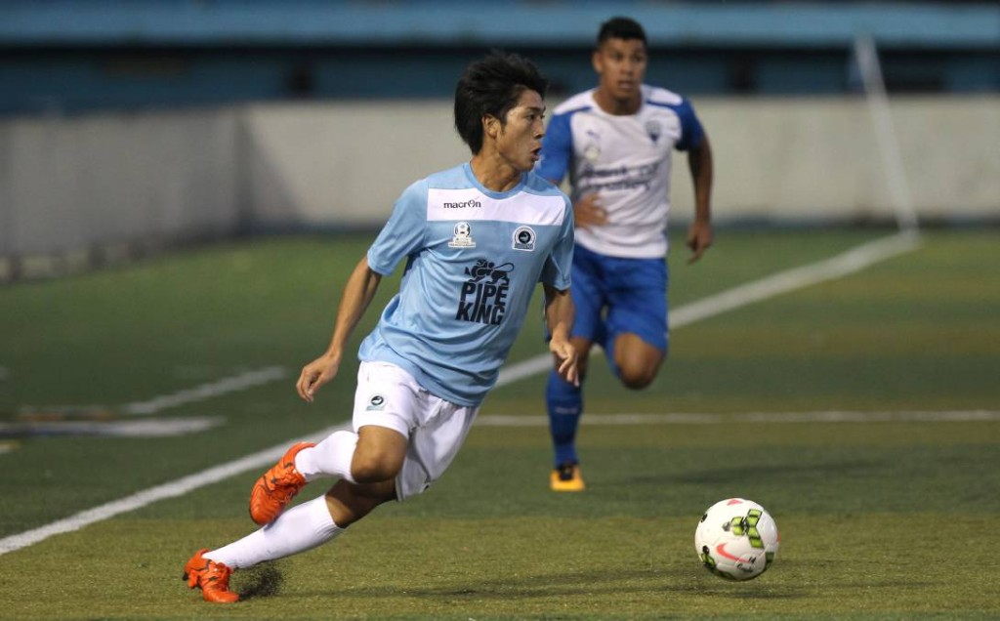
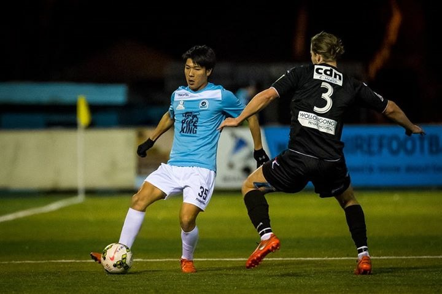

A child can train for years and still never be truly seen.
Not in the language they think in. Not in the skill that is theirs alone.
We exist for that child — and for the parent who has been waiting for someone
to look closely enough.
This is not a failure of effort. It is a failure of being seen.
For families in Tokyo raising children in English, the path is familiar — and quietly unfinished.
They train. They try. And still, something essential goes unnamed.
01
They think in English. The session does not.
Most football schools in Tokyo are conducted in Japanese. Instruction, correction, and
praise never quite arrive in the language your child lives in. To be coached in English
is not a courtesy. It is the difference between being managed — and being understood.
02
A crowded hour cannot hold a serious child.
A school session is a shared hour. It cannot give the quality, nor the volume, that a
player who wants more requires. The fault that is theirs remains unnamed. The skill they
long to grow remains untrained. They go home still hungry.
03
They want higher. No one has named the way.
Ambition without a map is only noise. They can feel the next level. Yet nobody has shown
them, with honesty, what is actually holding them back — or which work should come next.
Wanting more is not the problem. Being left without a method is.
04
The internet is loud. Almost none of it is theirs.
YouTube and social media offer infinite drills. Almost none of it is accountable.
Almost none of it belongs to this child. In a sea of content, the question is not more
information. It is whom you trust with the years they will not get back.
02 — What we hold
A former professional. A proven record.
The first Japanese player to win the golden boot in Australia’s NSW State League 1.
That career — and the eye it formed — is now given privately, in English, to young
players in Tokyo: a long-form programme, and a player app that turns intention into habit.
01
English, without compromise
Every session is delivered in English — so the player receives the coaching they
deserve in the language of the home.
02
Private coaching, not a crowded hour
What a group school cannot cover in quality or quantity, personal coaching can.
The work is theirs alone: the precise skills they must grow, trained at the intensity they require.
03
Diagnosis from a coach who has been there
Proven coaches isolate the exact gap between the player they are and the player they
can become — then train that gap, and only that gap. Higher football is not a mystery.
It is a matter of pinpoint work.
04
A continuum — and a first lesson
Lasting skill is built across a medium-to-long-term programme: one diagnosis, one method, one arc.
A single opening lesson is welcome. The continuum is how the work becomes theirs.
05
The player’s own atelier
A dedicated training app holds goals, daily points of focus, and homework from the coach.
The player can return to it at any hour. Awareness becomes habit. Habit becomes standard.
The atelier app
What is written down becomes the standard.
Between sessions, most good intentions dissolve. The player’s atelier exists so they do not.
Goals, the day’s focus, and the coach’s homework live in one private space — always
available, always theirs.
Season aims, held in one place
Daily points of attention from the coach
Homework that turns a session into a week
A record the player can reopen at any hour
9:41
Atelier
Player · Tokyo
Season aim
Become the most reliable midfielder in the side.
Today’s focus
Receive on the half-turn. First touch into space.
Homework
Wall-pass series · 8 minutes
Weak-foot driven pass · 40
Juggling, both feet · 100
“Quality over speed. Open the hip before the ball arrives.”
03 — The programme
One arc. Not a collection of hours.
In football, there is no magic that instantly grants solid skill or the essence of the game.
That is why we do not stop at a single session. We propose the value of a continuous
programme, so ability accumulates with certainty. (A one-off lesson is also welcome.)
Session 01
The first lesson
A private session devoted to listening and seeing: a full hearing of the player’s
current world, and a live analysis of their play.
The following day
The programme, in writing
A document is sent: the specific issues, the prescribed training, and the
medium-to-long-term schedule — something the family can hold.
Session 02, onward
The continuum
Training proceeds along the programme. The player’s atelier supports daily self-work
and makes the work habitual — not occasional.
“You do not need more noise. You need a coach who will look at your child until the work
becomes obvious — and then stay long enough for it to become theirs.”
04 — Investment
Two plans. A clear investment.
Begin with a first lesson to see clearly. Continue on the Standard Plan — or, for families
who want every day as first priority, Premium.
Plan I
Standard Plan
¥4,000
First lesson · 60 minutes
Included in the first lesson
Hearing of the player’s current situation
Training
Analysis and proposal — the issues, and the prescribed training
If you continue
From the 2nd lesson (60 min)¥9,800/ session
Medium-to-long-term training and self-practice programme
Dedicated player training-management web app
Training
Analysis each session, and revision of the optimal training
Plan II
Premium Plan
¥190,000
Monthly
As a first-priority VIP
Lesson location and time are set entirely around the client
One lesson a day, available every day
Medium-to-long-term training and self-practice programme
Dedicated player training-management web app
Training
Analysis each session, and revision of the optimal training
05 — The coach
A proven elite coach.
The work is not handed to a rotating bench. Your child is coached by the founder —
a former professional with a record at the level he reached.




Founder & CEO, Kepty Co., Ltd.
Tomohiro Kajiyama
After Cemano Kobe Youth U-18 and Kansai University, he played two seasons as a professional
in Australia’s NSW State League 1. In 2017 he became the first Japanese player to win
the league’s Golden Boot award.
After retiring, he joined Recruit Holdings — working on strategy for Study Sapuri and the global
education business Quipper. He then founded Kepty Co., Ltd., and now coaches young players
in Tokyo in English: privately, and over time.
Through Kepty Co., Ltd. he also runs a separate English-learning service for current
professional footballers. That work is English coaching — not Football Private Lesson.